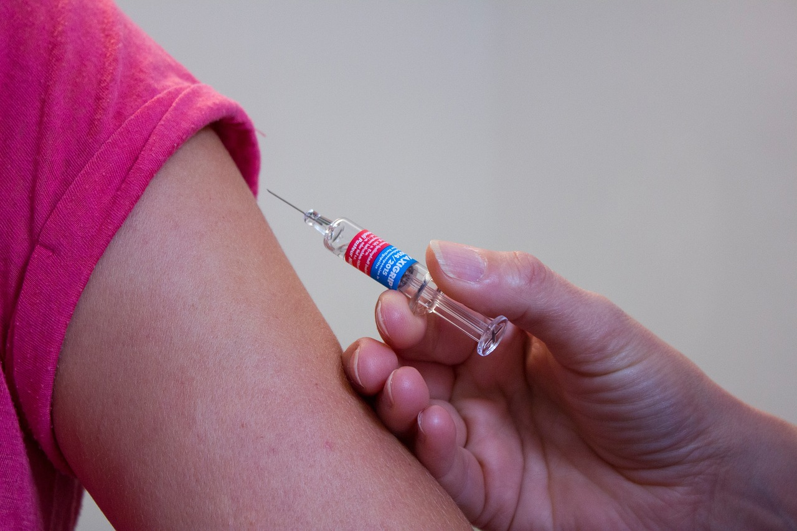

Childhood vaccination in New York City
Vaccination percentages vary across demographics and regions.

Childhood vaccination coverage varies widely by vaccine type, race and ethnicity and neighborhood, according to the New York City Department of Health.
Vaccination data comes from the New York City Health Deparment's Citywide Immunization Registry, which keeps immunization records for NYC residents throughout their lives.
The vaccines with the highest coverage among children of all ages were the polio, Hepatitis B and combined measles, mumps and rubella vaccines. The flu, HPV and combined 7-vaccine series vaccines had the least coverage.
The city's health department just started a campaign on the HPV vaccine specifically, said NYC Health Acting Commissioner Dr. Michelle Morse, since HPV vaccination rates could be much higher and the data is clear that the HPV vaccine prevents cancer.
Morse said she is concerned that only 65 percent of two-year-olds had received all the recommended doses of the combined 7-vaccine series, which includes DTaP, Polio, MMR, Hib, HepB, Varicella and PCV, as of December.
"We would love for that number to be 100 percent, of course," Morse said, "and we want our kids and our babies and our infants to be as safe as possible. These vaccines are the best way to protect themselves and for their families to protect themselves."
Since the department observes significant variation in vaccination rates by race and geography, it often looks at those factors to best understand inequities and what the roots of those inequities are, according to Morse.
The health department engages with healthcare providers who offer these vaccines across New York City and offers them technical assistance on how to improve vaccination rates, Morse said.
New York City's Vaccines for Children Program distributes 2.7 million vaccines through more than 1,400 healthcare providers across the city.
To address inequities in vaccine coverage by geography, the department has neighborhood health action centers in the three neighborhoods across the city — Brooklyn, Harlem and the Bronx — with the most unfair health outcomes.